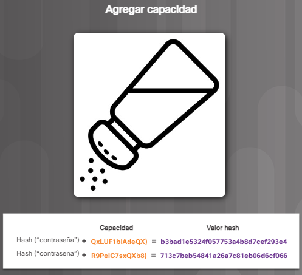
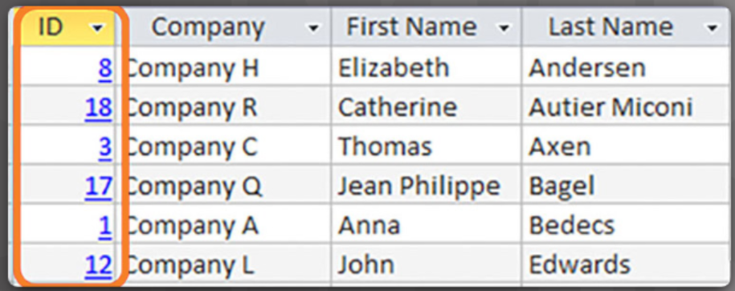

¿Qué es un hash?
Los usuarios deben saber que sus datos permanecen sin cambios mientras se encuentran almacenados o en tránsito. El hash es una herramienta que garantiza la integridad de datos al tomar los datos binarios (el mensaje) y generar una representación de longitud fija llamada valor hash o compendio del mensaje, como se muestra en la figura.
La herramienta de hash utiliza una función criptográfica de hash para verificar y proteger la integridad de los datos. También puede verificar la autenticación. Las funciones de hash reemplazan la contraseña de texto no cifrado o las claves de encriptación porque las funciones de hash son funciones unidireccionales.
Esto significa, que si se realiza el hash de una contraseña con un algoritmo de hash específico, siempre dará como resultado la misma compendio de hash. Se le considera unidireccional porque con funciones de hash, es informáticamente inviable que dos conjuntos diferentes de datos tengan la misma compendio o el mismo resultado de hash.
Cada vez que se cambian o se modifican los datos, el valor hash también cambia. Debido a esto, los valores hash criptográficos se conocen a menudos como huellas dactilares digitales. Pueden detectar archivos de datos duplicados, cambios en las versiones de los archivos y aplicaciones similares.
Estos valores protegen de un cambio accidental o intencional a los datos y el daño de datos accidental. El hash también es muy eficaz. Un archivo grande o el contenido de toda una unidad de disco genera un valor hash con el mismo tamaño.
Propiedades de hash
El hash es una función matemática unidireccional que es relativamente fácil de computar, pero es mucho más difícil de revertir. El café molido es una buena analogía de una función unidireccional. Es fácil moler los granos de café, pero es casi imposible volver a unir todas las partes minúsculas para reconstruir los granos originales.
Una función de hash criptográfica tiene las siguientes propiedades:
- La entrada puede ser de cualquier longitud
- La salida tiene una longitud fija
- La función de hash es unidireccional y es irreversible
- Dos valores de entrada distintos casi nunca darán como resultado distintos valores de hash
Algoritmos de hash
Las funciones de hash son útiles para asegurar que un usuario o un error de comunicación modifique los datos por accidente. Por ejemplo, es posible que un emisor desee asegurarse de que nadie modifique un mensaje en camino al destinatario. El dispositivo de envío introduce el mensaje en un algoritmo de hash y computa su compendio o huella digital de longitud fija.
Algoritmo de hash simple (checksum de 8 bits)
El checksum de 8 bits es uno de los primeros algoritmos de hash y es la forma más simple de una función de hash. Un checksum de 8 bits calcula el hash al convertir el mensaje en números binarios y luego organizando la cadena de números binarios en fragmentos de 8 bits. El algoritmo añade los valores de 8 bits. El último paso es convertir el resultado mediante un proceso llamado el complemento de 2.
El complemento de 2 convierte un sistema binario al valor opuesto y luego agrega uno. Esto significa que un cero se convierte en uno y un uno se convierte en un cero. El último paso es agregar 1 lo que genera un valor hash de 8 bits.
Calcular el hash de 8 bits para el mensajeBOB.
-
Convierta BOBO al sistema binario con el código ASCII.
-
Convierta los números binarios a hexadecimales.
-
Introduzca los números hexadecimales en la calculadora. - 42 4F 42.
-
Observe el resultado obtenido. HASH: 2D.
Algoritmos de hash modernos
Existen muchos algoritmos de hash modernos que se utilizan ampliamente en la actualidad. Dos de los más populares son MD5 y SHA.
Algoritmo de compendio del mensaje 5 (MD5)
Ron Rivest desarrolló el algoritmo de hash MD5 y varias aplicaciones de Internet lo utilizan en la actualidad. MD5 es una función unidireccional que facilita el cálculo de un hash de datos de entrada dados, pero dificulta el cálculo de los datos de entrada con un solo valor hash.
MD5 produce un valor hash de 128 bits. El malware Flame comprometió la seguridad de MD5 en 2012. Los creadores del malware Flame utilizaron una colisión MD5 para forjar un certificado de firma de códigos de Windows.
Explicación de ataque de colisión del malware Flame.
Algoritmo de hash seguro (SHA)
Instituto Nacional de Normas y Tecnología (NIST) de los Estados Unidos desarrolló SHA, el algoritmo especificado en el Estándar de hash seguro (SHS). NIST publicó SHA-1 en 1994. SHA-2 reemplazó a SHA-1 por cuatro funciones de hash adicionales para componer la familia SHA:
- SHA-224 (224 bits)
- SHA-256 (256 bits)
- SHA-384 (384 bits)
- SHA-512 (512 bits)
SHA-2 es un algoritmo más sólido y reemplaza a MD5. SHA-256, SHA-384 y SHA-512 son los algoritmos de p´roxima generación.
Archivos y medios digitales de hash
La integridad garantiza que los datos y la información estén completos y sin alteraciones al momento de la adquisición. Esto es importante para saber cuando un usuario descarga un archivo de Internet o un examinador forense busca la evidencia en los medios digitales.
Para verificar la integridad de todas las imágenes de IOS, Cisco proporciona checksums de MD5 y SHA en el sitio web de software de descarga de Cisco. El usuario puede realizar una comparación de esta compendio de MD5 contra el compendio de MD5 de una imagen de IOS instalada en un dispositivo, como se muestra en la figura. El usuario puede estar tranquilo ahora de que nadie alteró ni modificó el archivo de imagen de IOS.
Nota: el comando verify /md5, que se muestra en la figura, excede el alcance de este curso.
El campo de informática forense digital usa el hash para verificar todos los medios digitales que contienen archivos. Por ejemplo, el examinador crea un hash y una copia de bit por bit de los medios que contienen archivos para producir un clon digital. El examinador compara el hash de los medios originales con la copia. Si los dos valores coinciden, las copias son idénticas. El hecho de que un conjunto de bits sea idéntico
al conjunto original de bits establece fijación. La fijación ayuda a responder algunas preguntas:
-
¿El examinador tiene los archivos que espera?
-
¿Los datos están dañados o modificados?
-
¿Puede el examinador probar que los archivos no están dañados?
Ahora el experto en informática forense puede examinar la copia en busca de cualquier evidencia digital mientras deja el archivo original intacto y sin modificar.
Hash de contraseñas
Los algoritmos de hash convierten cualquier cantidad de datos en una huella digital o hash digital de longitud fija. Un delincuente no puede invertir un hash digital para descubrir la entrada original. Si la entrada cambia por completo, puede dar lugar a un hash diferente. Esto funciona para proteger las contraseñas. Un sistema debe almacenar
una contraseña de manera que pueda protegerla y aun así pueda verificar que la contraseña de un usuario es correcta.
La figura muestra el flujo de trabajo para el registro y la autenticación de cuentas de usuarios mediante un sistema basado en hash. El sistema nunca escribe la contraseña en la unidad de disco duro, solo almacena el hash digital.
Aplicaciones
Utilice lasfunciones de hash criptográficas en las siguientes situaciones:
-
Para proporcionar una prueba de autenticidad cuando se utiliza con una clave de autenticación secreta simétrica, como Seguridad IP (IPsec) o autenticación del protocolo de routing.
-
Para proporcionar autenticación al generar respuestas de única vez y unidireccionales a los desafíos que se presentan en los protocolos de autentcicación.
-
Para proporcionar una prueba de verificación de la integridad del mensaje, como als utilizadas en los contratos con firma digital y en los certificados de infraestructura de clave pública (PKI), como aquellos aceptados al acceder a un sitio
seguro mediante un navegador.
Al elegir un algoritmo de hash, utilice SHA-256 o superior ya que son los más seguros actualmente. Evite los algoritmos SHA-1 y MD5 debido a la detección de fallas de seguridad. En las redes de producción, implemente SHA-256 o superior.
Aunque el hash puede detectar cambios accidentales, no puede protegerse de los cambios deliberados. No existe información de identificación única del emisor en el procedimiento de hash. Esto significa que cualquier persona puede calcular un hash para los datos, siempre y cuando tengan la función de hash correcta. Por ejemplo, cuando un mensaje
atraviesa la red, un atacante potencial puede interceptar el mensaje, cambiarlo, recalcular el hash y añadir el hash al mensaje. El dispositivo receptor solo validará el hash que esté añadido. Por lo tanto, el hash es vulnerable a los ataques man-in-the-middle y no proporciona seguridad a los datos transmitidos.
Desciframiento de hashes
Para descifrar un hash, un atacante debe adivinar la contraseña. Los dos ataques principales utilizados para adivinar las contraseñas son los ataques de diccionario y de fuerza bruta.
Un ataque de diccionario utiliza un archivo que contiene palabras, frases y contraseñas comunes. El archivo contiene los hashes calculados. Un ataque de diccionario compara los hashes del archivo con los hashes de la contraseña. Si un hash coincide, el atacante conoce un grupo de contraseñas potencialmente buenas.
Un ataque de fuerza bruta intenta cada combinación posible de caracteres hasta una longitud determinada. Un ataque de fuerza bruta lleva mucho tiempo del procesador, pero solo es cuestión de tiempo para que este método descubra la contraseña. Las contraseñas deben ser lo suficientemente largas para compensar el tiempo que tarda en realizarse un ataque de
fuerza bruta demasiado prolongado para ser provechoso. Las contraseñas de hash permiten que sea más difícil para el delincuente recuperar esas contraseñas.
Actividad. Identificar la terminología de hash

¿Qué es el 'salting'?
La técnica de «salting» permite que el hash de la contraseña sea más seguro. Si dos usuarios tienen la misma contraseña, también tendrán los mismos hashes de la contraseña. Un salt, que es una cadena aleatoria de caracteres, es una entrada adicional a la contraseña antes del hash. Esto crea un resultado distinto de hash para
las dos contraseñas como se muestra en la figura. Una base de datos almacena el hash y el salt.
En la figura, la misma contraseña genera un hash diferente porque el «salt» en cada instancia es diferente. El «salt» no tiene que ser secreto ya que es un número aleatorio.

Prevención de ataques
La técnica de "salting" evita que un atacante utilice un ataque de diccionario para adivinar las contraseñas. El «salting» también hace imposible usar las tablas de búsqueda y las tablas de arcoíris para descifrar un hash.
Tablas de búsqueda
Una tabla de búsqueda almacena los hashes previamente computados de las contraseñas en un diccionario de contraseñas junto con la contraseña correspondiente. Una tabla de búsqueda es una estructura de datos que procesa cientos de búsquedas de hash por segundo.
Qué tan rápidamente una tabla de búsqueda puede descifrar un hash.
Tablas de búsqueda inversas
Este ataque permite que el delincuente cibernético inicie un ataque de diccionario o de fuerza bruta en muchos hashes sin la tabla de búsqueda previamente computada. El delincuente cibernético crea una tabla de búsqueda que grafica cada hash de contraseña de la base de datos de la cuenta vulnerada a una lista de usuarios. El delincuente cibernético
realiza un hash de cada conjeturas de la contraseña y usa la tabla de búsqueda para obtener una lista de usuarios cuya contraseña coincida con las conjeturas del delincuente cibernético, como se muestra en la figura. Debido a que muchos usuarios tienen la misma contraseña, el ataque funciona bien.
Tablas de arcoíris
Las tablas de arcoíris sacrifican la velocidad de descifrado de hash para que las tablas de búsqueda sean más pequeñas. Una tabla más pequeña significa que la tabla puede almacenar las soluciones para más hashes en la misma cantidad de espacio.
Implementación de la técnica de 'salting'
Un generador criptográficamente seguro de números pseudoaleatorios (CSPRNG) es la mejor opción para generar un salt. CSPRNGs genera un número aleatorio que tiene un alto nivel de aleatoriedad y es totalmente impredecible, por lo que es criptográficamente seguro.
Para implementar correctamente la técnica de 'salting', utilice las siguientes recomendaciones:
- El salt debe ser único para cada contraseña de usuario
- Nunca reutilice un salt
- La longitud del salt debe coincidir con la extensión del resultado de la función de hash
- Siempre realice el hash en el servidor en una aplicación web
Con una técnica llamada «alargamiento de claves» también podrá protegerse de los ataques. El alargamiento de claves hace que el hash funcione muy lentamente. Esto impide que el hardware de alto nivel que puede calcular miles de millones de hashes por segundo sea menos eficaz.
Los pasos que una aplicación de base de datos utiliza para almacenar y validar una contraseña salt se muestran en la figura.
Práctica de laboratorio:
Práctica de laboratorio: decodificación de contraseñas.
¿Qué es un HMAC?
El siguiente paso en prevenir que un delincuentes cibernético inicie un ataque de diccionario o un ataque de fuerza bruta en un hash es agregar una clave secreta al hash. Solo la persona que conoce el hash puede validar una contraseña. Una manera de lograrlo es incluir la clave secreta en el hash mediante un algoritmo de hash llamado código de autenticación de mensajes de hash con clave (HMAC o KHMAC).
Los HMAC utilizan una clave secreta adicional como entrada a la función de hash. El uso de HMAC va un paso más allá de garantizar la integridad al incorporar la autenticación. Un HMAC utiliza un algoritmo específico que combina una función de hash criptográfica con una clave secreta, como se muestra en la figura.

Solo el emisor y el receptor conocen la clave secreta y el resultado de la función de hash ahora depende de los datos de entrada y la clave secreta. Solo las partes que tienen acceso a esa clave secreta pueden calcular el compendio de una función de HMAC. Esta característica derrota los ataques man-in-the-middle y proporciona autenticación del origen de los datos.
Funcionamiento del HMAC
Considere un ejemplo en el que un emisor desea asegurarse de que un mensaje permanezca sin cambios y en tránsito, y desea proporcionar una manera de que el receptor autentique el origen del mensaje.
Como se muestra en la Figura , el dispositivo emisor introduce los datos (como el pago de Terry Smith de $100 y la clave secreta) en el algoritmo de hash y calcula el compendio o huella digital de HMAC de longitud fija. El receptor obtiene huellas digitales autenticadas anexadas al mensaje.
En la Figura, el dispositivo receptor elimina la huella digital del mensaje y utiliza el mensaje de texto simple con su clave secreta como entrada a la misma función de hash. Si el dispositivo receptor calcula una huella digital igual a la huella enviada, el mensaje aún se encontrará en su formato original. Además, el receptor conoce el origen del mensaje porque solo el emisor posee una copia de la clave secreta compartida. La función de HMAC comprobó la autenticación del mensaje.
Aplicación del uso de HMAC
Los HMAC también pueden autenticar a un usuario web. Muchos servicios web utilizan la autenticación básica, la cual no cifra el nombre de usuario y la contraseña durante la transmisión. Con el HMAC, el usuario envía un identificador de clave privada y un HMAC. El servidor busca la clave privada del usuario y crea un HMAC. El HMAC del usuario debe coincidir con el que calcula el servidor.
Las VPN que utilizan IPsec dependen de las funciones de HMAC para autenticar el origen de cada paquete y proporcionar verificación de la integridad de los datos.
Como se muestra en la figura, los productos de Cisco utilizan el hash para la autenticación de la entidad, la integridad de datos y para la autenticidad de datos:
- Los routers de Cisco IOS usan el hash con las claves secretas usando el HMAC como la manera de agregar información de autenticacion a las actualizaciones de protocolo de routing
- Los gateways y los clientes de IPsec usan algoritmos de hash, como MD5 y SHA-1 en el modo HMAC, para proporcionar integridad y autenticidad del paquete.
- Las imágenes del software de Cisco en Cisco.com tienen un checksum basado en MD5 disponible para que los vclientes puedan verficar la integridad de las imágenes descargadas.
Nota: El término entidad puede referirse a los dispositivos o sistemas dentro de una organización.
¿Qué es una firma digital?
Las firmas manuscritas y los sellos estampados prueban la autoría de los contenidos del documento. Las firmas digitales pueden proporcionar la misma funcionalidad que las firmas manuscritas.
Los documentos digitales sin protección son muy fáciles de cambiar para cualquier persona. Una firma digital se utiliza para determinar si alguien edita un documento después de que el usuario lo firma. Una firma digital es un método matemático utilizado para validar la autenticidad y la integridad de un mensaje, documento digital o software.
En muchos países, las firmas digitales tienen la misma importancia legal que un documento manualmente firmado. Las firmas electrónicas son vinculantes para contratos, negociaciones o cualquier otro documento que requiere una firma manuscrita. Un registro de auditoría sigue el historial de documentos electrónicos para fines de defensa normativos y legales.
Una firma digital ayuda a establecer la autenticidad, la integridad y la imposibilidad de rechazo. Las firmas digitales tienen propiedades específicas que permiten la autenticación de la entidad y la integridad de los datos como se muestra en la figura.
Las firmas digitales son una alternativa a HMAC.
No rechazo
Rechazar significa denegar. La no repudiación es una manera de garantizar que el emisor de un mensaje o documento no pueda negar el envío del mensaje o del documento y que el destinatario no puede negar haber recibido el mensaje o documento.
Una firma digital garantiza que el emisor firmó electrónicamente el mensaje o documento. Dado que una firma digital es única para las personas que la crean, esa persona no puede negar posteriormente que proporcionó la firma.
Procesos de creación de una firma digital
La criptografía asimétrica es la base de las firmas digitales. Un algoritmo de clave pública como RSA genera dos claves: Una privada y otra pública. Las claves se relacionan matemáticamente.
Alicia desea enviar a Bob un correo electrónico que contiene información importante para la distribución de un producto nuevo. Alicia desea asegurarse de que Bob sepa que el mensaje provino de ella y que este no cambió después de que ella lo envió.
Alicia crea el mensaje junto con un compendio del mensaje. Luego cifra este compendio con su clave privada como se muestra en la Figura.
Alicia ata el mensaje, el compendio del mensaje cifrado y su clave pública para crear el documento firmado. Alicia envía esto a Bob como se muestra en la Figura.
Bob recibe el mensaje y lo lee. Para asegurarse de que el mensaje proviene de Alice, él crea un compendio de mensaje del mensaje. Él toma el compendio del mensaje cifrado recibido de Alicia y lo descifra con la clave pública de Alicia. Bob compara el compendio del mensaje que recibió de Alicia con el compendio que él generó.
Si coinciden, Bob sabe que puede confiar en que nadie manipuló el mensaje, como se muestra en la Figura.
Proceso de creación de un certificado digital.
Uso de firmas digitales
La firma de un hash en lugar del documento completo proporciona eficiencia, compatibilidad e integridad. Es probable que las organizaciones deseen reemplazar los documentos impresos y las firmas de tinta con una solución que garantice que el documento electrónico cumple con todos los requisitos legales.
Las siguientes dos situaciones proporcionan ejemplos de uso de firmas digitales:
-
Firma de código. Se utiliza para verificar la integridad de los archivos ejecutables descargados del sitio web de un proveedor. La firma de códigos también utiliza certificados digitales firmados para autenticar y verificar la identidad del sitio.
-
Certificados digitales. Se utilizan para verificar la identidad de una organización o de una persona para autenticar el sitio web de un proveedor y para establecer una conexión cifrada a fin de intercambiar datos confidenciales.
Comparación de los algoritmos de firma digital.
Los tres algoritmos comunes de firma digital son el Algoritmo de firma digital (DSA), Rivest-Shamir-Adleman (RSA y el Algoritmo de firma digital de curva elíptica (ECDSA). Los tres generan y verifican firmas digitales. Estos algoritmos dependen de las técnicas de cifrado asimétrico y de clave pública. Las firmas digitales requieren dos operaciones:
1. Generación de claves.
2. Verificación de claves.
Ambas operaciones requieren la encriptación y el descifrado de clave.
El DSA utiliza la factorización de números grandes. Los gobiernos utilizan el DSA para las firmas, a fin de crear firmas digitales. El DSA no se extiende más allá de la firma del mensaje.
El RSA es el algoritmo más común de la criptografía de clave pública en la actualidad. El RSA se denomina así por las personas que lo crearon en 1977: Ron Rivest, Adi Shamir, Adi Shamir y Leonard Adleman. El RSA depende del cifrado asimétrico. El RSA cubre la firma y también cifra el contenido del mensaje.
El DSA es más rápido que el RSA como un servicio de firma de un documento digital. El RSA es el más adecuado para las aplicaciones que requieren la firma y la verificación de documentos electrónicos y encriptación de mensaje.
Al igual que la mayoría de las áreas de la criptografía, el algoritmo RSA se basa en dos principios matemáticos; factorización de módulos y de números primos.
Cómo RSA utiliza la factorización de módulos y de números primos.
ECDSA es el algoritmo de firma digital más nuevo que está reemplazando gradualmente a RSA. La ventaja de este nuevo algoritmo es que puede utilizar tamaños de clave mucho más pequeños para la misma seguridad y requiere menos cómputo que RSA.
Práctica de laboratorio. Uso de firmas digitales.
Práctica de laboratorio. Uso de firmas digitales.
¿Qué es un certificado digital?
Un certificado digital es equivalente a un pasaporte electrónico. Permiten a los usuarios, hosts y organizaciones intercambiar información de manera segura a través de Internet. Específicamente, un certificado digital autentica y verifica que los usuarios que envían un mensaje sean quienes afirman ser. Los certificados digitales
también pueden proporcionar confidencialidad para el receptor con los medios para cifrar una respuesta.
Los certificados digitales son similares a los certificados físicos. Por ejemplo, el certificado Asociado en redes con certificación de Cisco (CCNA-S) en papel, en la Figura 1 identifica a las personas, la autoridad del certificado (quién autorizó el certificado) y durante cuánto tiempo el certificado es válido. Observe de qué
manera el certificado digital en la Figura 2 también identifica los elementos similares.
Uso de certificados digitales.
Para poder comprender cómo usar un certificado digital, consulte la Figura 1. En este escenario, Bob confirma un pedido con Alicia. El servidor web de Alicia utiliza un certificado digital para garantizar una transacción segura.
Paso 1: Bob examina el sitio web de Alicia. Un navegador designa una conexión segura al mostrar un icono de bloqueo en la barra de estado de seguridad.
Paso 2: El servidor web de Alicia envía un certificado digital al navegador de Bob.
Paso 3: El navegador de Bob comprueba el certificado almacenado en los ajustes del navegador. Solo los certificados confiables permiten que la transacción siga adelante.
Paso 4: El navegador web de Bob crea una clave única de sesión por única vez.
Paso 5: El navegador de Bob utiliza la clave pública del servidor web en su certificado para cifrar la sesión.
Paso 6: El resultado es que solo el servidor web de Alicia pueda leer las transacciones enviadas desde el navegador de Bob.

¿Qué es una autoridad de certificación?
En Internet, sería poco práctico intercambiar continuamente la identificación entre todas las partes. Por lo tanto, las personas acuerdan aceptar la palabra de un tercero neutral. Probablemente, el tercero realiza una investigación exhaustiva antes de emitir las credenciales. Después de esta investigación exhaustiva,
el tercero emite credenciales que son difíciles de falsificar. Desde ese momento, todas las personas que confían en el tercero simplemente aceptan las credenciales que emite el tercero.
Por ejemplo, en la figura, Alice solicita una licencia de conducir. En este proceso, presenta evidencia de su identidad, como partida de nacimiento, identificación con fotografía, etc. a una oficina gubernamental de otorgamiento de licencias. La oficina valida la identidad de Alice y permite que Alice complete el examen de conducir.
Al completarlo exitosamente, la oficina de otorgamiento de licencias emite una licencia de conducir a Alice. Posteriormente, Alice debe cobrar un cheque en el banco. Al presentar el cheque al cajero del banco, el cajero del banco le solicita la Id. El banco, debido a que confía en la oficina gubernamental de otorgamiento de licencias,
verifica su identidad y cobra el cheque.

Una autoridad de certificación (CA) funciona de la misma manera que una oficina de otorgamiento de licencias. La CA emite certificados digitales que autentican la identidad de las organizaciones y de los usuarios. Estos certificados también firman mensajes para asegurarse de que nadie los manipuló.
¿Qué contiene un certificado digital?
Siempre y cuando un certificado digital siga una estructura estándar, cualquier entidad podrá leer y comprenderlo, independientemente del emisor. El X.509 es un estándar de la infraestructura de clave pública (PKI) para administrar los certificados digitales. La PKI consta de las políticas, las funciones y los procedimientos necesarios para crear,
administrar, distribuir, utilizar, almacenar y revocar los certificados digitales. El estándar X.509 especifica que los certificados digitales contienen la información estándar que se muestra a continuación.
El proceso de validación
Los navegadores y las aplicaciones realizan una comprobación de validación antes de confiar en un certificado para asegurarse de que es válido. Los tres procesos incluyen lo siguiente:
-
La detección de certificados valida el trayecto de certificación al marcar cada certificado desde el comienzo con el certificado de la CA raíz.
-
La validación del trayecto selecciona un certificado de la CA de emisión para cada certificado de la cadena.
-
La revocación determina si el certificado fue revocado y por qué.
El trayecto del certificado.
Una persona obtiene un certificado para una clave pública de un CA comercial. El certificado pertenece a una cadena de certificados llamada cadena de confianza.
El número de certificados en la cadena depende de la estructura jerárquica de la CA.
La figura muestra una cadena de certificados para una CA de dos niveles. Existe una CA de raíz sin conexión y una CA subordinada en línea.
El motivo de la estructura de dos niveles es que la firma X.509 permite una recuperación más sencilla en caso de riesgo. Si existe una CA sin conexión,
puede firmar el nuevo certificado de CA en línea. Si no hay ninguna CA sin conexión, el usuario debe instalar un nuevo certificado de CA de raíz en cada máquina, teléfono o tablet cliente.
Actividad. Ordenar los pasos del proceso del certificado digital

Integridad de los datos
Las bases de datos proporcionan una forma eficiente de almacenar, recuperar y analizar datos. A medida que la recopilación de datos aumenta y los datos se vuelven más sensibles,
es importante que los profesionales de la ciberseguridad protejan el creciente número de bases de datos. Piense en una base de datos como un sistema de llenado electrónico.
La integridad de datos se refiere a la precisión, la uniformidad y la confiabilidad de los datos almacenados en una base de datos. La responsabilidad de la integridad de los datos
depende de los diseñadores de bases de datos, desarrolladores y la administración de la organización.
Las cuatro reglas o restricciones de integridad de los datos son las siguientes:
-
Integridad de entidad. Todas las filas deben tener un identificador único llamado Clave Principal.

-
Integridad de dominio. Todos los datos almacenados en una columna deben seguir el mismo formato y tener la misma definición.
-
Integridad referencial. Las relaciones entre tablas deben permanecer congruentes. Por lo tanto, un usuario no puede eliminar un registro que se relaciona con otro.
-
Integridad definida por el usuario. Un conjunto de reglas definidas por un usuario que no pertenece a una de las demás categorías. Por ejemlo, un cliente realiza
un pedido nuevo, como se muestra en la imagen. El usuario primero verifica si este es un cliente nuevo. Si lo es, el usuario agrega al cliente nuevo a la tabla de clientes.
Controles del ingreso de los datos.
El ingreso de datos implica introducir datos en un sistema. Un conjunto de comandos garantiza que los usuarios introduzcan los datos correctos.
Despliegue los controles de datos principales
Cuente con una opción desplegable para las tablas principales en lugar de solicitar a las personas que introduzcan los datos. Un ejemplo de despliegue de controles de datos
principales implica el uso de la lista de ubicaciones del sistema de dirección postal de EE. UU. para estandarizar las direcciones.
Controles de validación del campo de datos
Configure las reglas para las verificaciones básicas, que incluyen:
- Entrada obligatoria que garantiza que un campo obligatorio contenga datos
- Máscaras de entrada que evitan que los usuarios ingresen datos no válidos o ayuden a garantizar que introducen datos constantemente (como un número de teléfono, por ejemplo
- Cantidades positivas en dólares
- Los rangos de datos garantizan que un usuario ingrese datos dentro de un rango determinado (como una fecha de nacimiento introducida como 01-18-1820, por ejemplo)
- Aprobación obligatoria de segundas personas (un cajero del banco recibe una solicitud de depósito o de retiro superior al valor especificado lo cual requiere una segunda o tercera aprobación)
- Activador de modificador de registro máximo (si la cantidad de registros modificados supera un número predeterminado dentro de un período específico bloquea a un usuario hasta que el administrador
identifica si las transacciones eran legítimas o no)
- Indicador de actividad inusual (un sistema se bloquea cuando reconoce actividad inusual)
Reglas de validación
Una regla de validación verifica que los datos se incluyan en los parámetros definidos por el diseñador de la base de datos.Una regla de validación ayuda a garantizar la integridad, la precisión y la coherencia de los datos.
Los criterios utilizados en una regla de validación incluyen los siguientes:
-
Tamaño: Controla la cantidad de caracteres en un entorno de datos.
-
Formato: Controla que los datos se ajusten a un formato específico.
-
Coherencia: Controla la coherencia de los códigos en los elementos de datos relacionados.
-
Rango: Controla que los datos se encuentran dentro de un valor mínimo y un valor máximo.
-
Dígito de control: Proporciona un cálculo adicional para generar un dígito de control para la detección de errores.
Cálculo del dígito de control para una ISBN de 10 dígitos
Validación del tipo de datos
La validación del tipo de datos es la validación de datos más simple y verifica que un usuario que ingresa datos concuerde con el tipo de caracteres esperados.
Por ejemplo, un número de teléfono no debería contener caracteres alfabéticos. Las bases de datos permiten tres tipos de datos: Números enteros, cadenas y decimales.
Validación de entrada
Uno de los aspectos más vulnerables de la administración de la integridad de la base de datos es controlar el proceso de entrada de datos.
Muchos ataques conocidos se ejecutan contra una base de datos e insertan datos malformados. El ataque puede confundir, colapsar o hacer que la aplicación divulgue
demasiada información al atacante. Los atacantes usan los ataques de entrada automatizados.
Por ejemplo, los usuarios completan un formulario a través de una aplicación web para suscribirse a un boletín. Una aplicación de base de datos genera y envía automáticamente
confirmaciones por correo electrónico. Cuando los usuarios reciben las confirmaciones por correo electrónico con un enlace URL para confirmar su suscripción, los atacantes
modifican el enlace URL. Estas modificaciones incluyen el cambio de nombre de usuario, dirección de correo electrónico o estado de suscripción. El correo electrónico
regresa al servidor que aloja la aplicación. Si el servidor web no verificó que la dirección de correo electrónico u otra información enviada de la cuenta coincide con la información
de suscripción, el servidor recibió información falsa. Los hackers pueden automatizar el ataque para colmar la aplicación web con miles de suscriptores no válidos en la base
de datos del boletín.

Verificación de anomalías
La detección de anomalías se refiere a la identificación de patrones en los datos que no se ajustan al comportamiento esperado. Estos patrones no se ajustan son anomalías,
valores atípicos, excepciones o aberraciones o sorpresas en diferentes aplicaciones de bases de datos. La detección y verificación de anomalías es una contramedida o protección
importante en la identificación de la detección de fraudes. La detección de anomalías en la base de datos puede identificar fraudes en tarjetas de crédito y seguros.
La detección de anomalías en la base de datos puede proteger los datos de la destrucción o los cambios masivos.
La verificación de anormalías requiere solicitudes o modificaciones de datos de verificación cuando el sistema detecta patrones inusuales o sorpresivos.
Un ejemplo de esto es una tarjeta de crédito con dos transacciones en ubicaciones de solicitud muy diferentes en poco tiempo. Si una solicitud de transacción de la ciudad
de Nueva York se realiza a las 10:30 a.m. y una segunda solicitud proviene de Chicago a las 10:35 a. m., el sistema activa una verificación de la segunda transacción.
Un segundo ejemplo se produce cuando una cantidad inusual de modificaciones en la dirección de correo electrónico se produce en un número inusual de registros de la base de datos.
Dado que los datos de correo electrónico lanzan ataques de denegación de servicio, la modificación de correo electrónico de cientos de registros podría indicar que un atacante utiliza
la base de datos de una organización como herramienta para su ataque de denegación de servicio.
Actividad. Identificar los controles de la inrtegridad de la base de datos

Integridad de la entidad
Una base de datos es como un sistema de llenado electrónico. Mantener un archivado correcto es fundamental para mantener la confianza y la utilidad de los datos en la base de datos.
Las tablas, los registros, los campos y los datos dentro de cada campo conforman una base de datos. Para mantener la integridad del sistema de archivado en la base de datos, los usuarios
deben cumplir con determinadas reglas. La integridad de la entidad es una regla de integridad, que afirma que cada tabla debe tener una clave primaria y que la columna o las columnas
elegidas para ser la clave principal deben ser únicas y no NULAS. El término «nulo» en una base de datos hace referencia a valores faltantes o desconocidos. La integridad de la entidad
permite la organización adecuada de los datos para ese registro.
Integridad referencial
Otro concepto importante es la relación entre los diferentes sistemas o tablas de llenado. La base de la integridad referencial es la clave externa. Una clave externa en una tabla hace
referencia a una clave principal en una segunda tabla. La clave principal de una tabla identifica de manera única a las entidades (filas) de la tabla. La integridad referencial mantiene
la integridad de las claves externas.
Integridad de dominio
La integridad del dominio garantiza que todos los elementos de datos de una columna se incluyan en un conjunto definido de valores válidos. Cada columna de una tabla tiene un
conjunto definido de valores, como el conjunto de todos los números para los números de tarjetas de crédito, los números de seguridad social o las direcciones de correo electrónico.
La limitación del valor asignado a una instancia de esa columna (un atributo) aplica la integridad de dominio. La aplicación de la integridad del dominio puede ser tan simple como elegir
el tipo de datos, la longitud y el formato correcto para una columna.
Práctica de laboratorio: Acceso remoto
Acceso remoto
Cap.5: El arte de garantizar la integridad
En este capítulo se analizó el arte de la integridad que se utiliza para garantizar que nada ni nadie modifique los datos durante su ciclo de vida completo. Este capítulo comenzó analizando los tipos de controles de integridad de datos.
Los algoritmos de hash, el salt de contraseña y el código de autenticación de mensajes de hash con clave (HMAC) son conceptos importantes que los héroes cibernéticos deben utilizar en la implementación de firmas y certificados digitales.
Estas herramientas proporcionan una manera para que los especialistas en ciberseguridad verifiquen la autenticidad de los mensajes y documentos. El capítulo finalizado con un análisis de las aplicaciones de integridad de la base de datos.
Tener un sistema de integridad de datos bien controlado y bien definido permite aumentar la estabilidad, el rendimiento y la capacidad de mantenimiento de un sistema de base de datos.